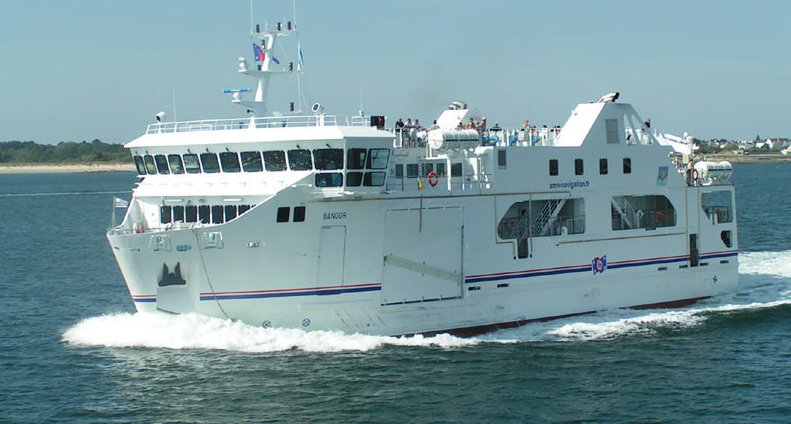

| Bangor | Informations |
|---|---|
| Type | Cargo et Passagers |
| Pavillon | France |
| Armateur propriétaire | Région Bretagne |
| IMO number | 9372975 |
| Armateur gérant | Compagnie Océane |
| Construit en | 2006 |
| Tonnage brut / net | 1161 / 365 ums |
| Chantier | Alstom Leroux Naval |
| Port en lourd | 233 tonnes |
| Motorisation | 2 moteurs ABC 6MDZC |
| Capacité | 450 passagers et 32 véhicules |
| Puissance | 2 x 960 kW |
| Dimensions | 46,00 × 12,00 × 4,55 m |
| Propulsion | 2 SCHOTTELS omnidirectionnels |
| Tirant d'eau | 2,75 m |
| Vitesse | 12 nœuds |


Pour revenir à la page d'acceuil, veuillez cliquer sur le bouton suivant
Retour vers l'acceuil